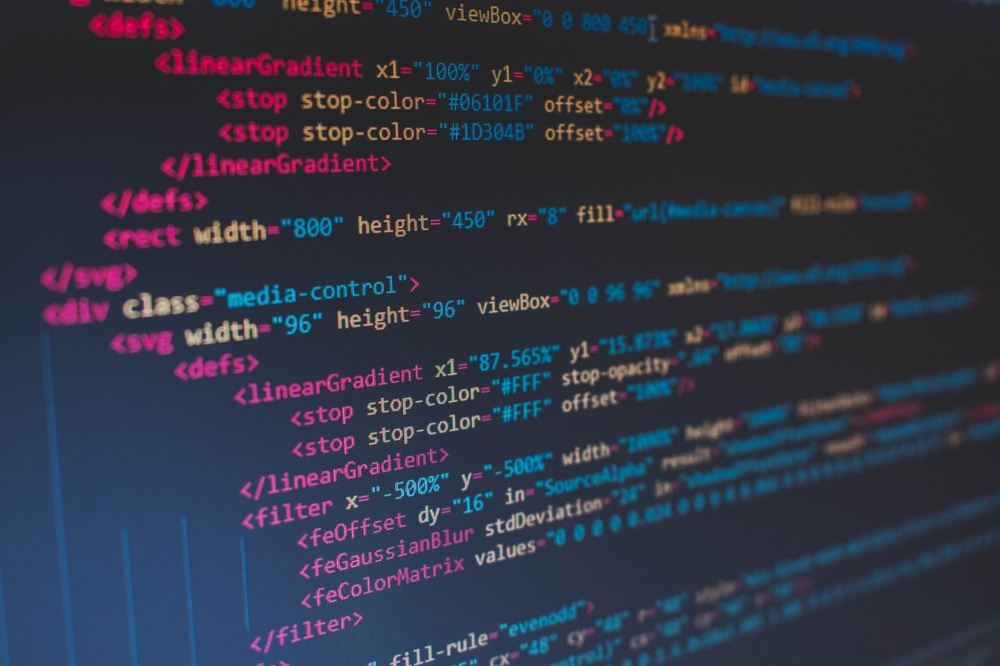
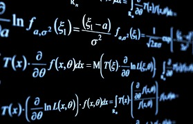
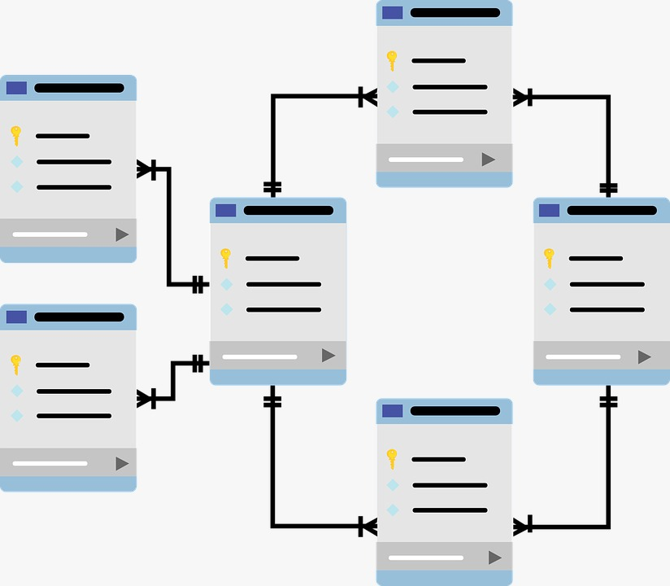

TOP 3 Ilmu mendasar di IT
Berikut merupakan 3 Ilmu mendasar mengenai IT yang telah kami pelajari
1. Pemrograman
 Belajar disini!Pemrograman adalah inti dari hampir semua aplikasi, perangkat lunak, dan sistem dalam dunia IT. Menguasai bahasa pemrograman memungkinkan seseorang untuk membuat program komputer, mengembangkan aplikasi web atau seluler, dan bahkan mengelola sistem otomatis. Bahasa pemrograman utama:
- Python: Sangat populer untuk pemula dan digunakan dalam data science, AI, web development, dan banyak lagi.
- Java: Digunakan untuk pengembangan aplikasi mobile (Android), aplikasi web, dan sistem backend.
- C / C++: Banyak digunakan dalam pengembangan perangkat keras, game, dan aplikasi yang membutuhkan performa tinggi.
- JavaScript: Penting untuk pengembangan web interaktif (frontend), serta Node.js untuk backend.
2. Matematika
 Belajar disini!Matematika memegang peranan yang sangat penting dalam dunia Teknologi Informasi (IT). Meskipun teknologi seringkali dianggap berhubungan erat dengan perangkat keras, perangkat lunak, dan jaringan, konsep-konsep matematika yang mendasari banyak aspek teknologi tersebut sering kali tidak terlihat secara langsung. Di dunia IT, matematika digunakan dalam berbagai bidang, mulai dari pengolahan data hingga pengembangan algoritma dan keamanan siber. Berikut adalah beberapa matakuliah yang berkaitan dengan Matematika yang telah dipelajari:
-
1. Kalkulus
Kalkulus merupakan matakuliah pada semester 1. Kalkulus adalah cabang matematika yang mempelajari konsep perubahan, baik itu perubahan suatu nilai fungsi, grafik, atau sistem dinamis. Dalam konteks Teknik Informatika, kalkulus digunakan untuk menyelesaikan masalah yang melibatkan perubahan yang kontinu, seperti optimisasi, permodelan, dan analisis sistem. Berikut adalah beberapa hal yang dipelajari dalam kalkulus yaitu :
- Limit: Konsep dasar untuk memahami nilai suatu fungsi ketika mendekati suatu titik tertentu. Digunakan untuk menentukan keberlanjutan fungsi atau perilaku pada titik tertentu.
- Turunan (Differential): Mengukur laju perubahan suatu fungsi. Dalam Informatika, turunan sering digunakan dalam algoritma optimisasi (misalnya, gradient descent).
- Integral: Digunakan untuk menghitung luas di bawah kurva atau jumlah akumulatif dari suatu fungsi. Integral memiliki banyak aplikasi dalam pemodelan masalah fisika, ekonomi, dan statistik.
-
2. Aljabar Linear
Aljabar Linear dipelajari pada semester 2, adalah cabang matematika yang berfokus pada studi vektor, ruang vektor, matriks, dan transformasi linear. Mata kuliah ini sangat penting dalam Teknik Informatika karena konsep aljabar linear digunakan dalam berbagai bidang seperti grafik komputer, pembelajaran mesin (machine learning), analisis data, dan pemrosesan citra. Poin-Poin yang Dipelajari dalam Aljabar Linear:
- Vektor dan Ruang Vektor: Pemahaman tentang vektor dalam ruang n-dimensi dan ruang vektor yang merupakan kumpulan semua vektor yang bisa dibentuk dengan operasi penjumlahan dan perkalian skalar.
- Matriks: Struktur data berbentuk tabel yang berisi elemen-elemen yang bisa dioperasikan dengan cara tertentu. Matriks digunakan dalam pemrograman grafis, simulasi, dan algoritma.
- Sistem Persamaan Linier: Metode untuk menyelesaikan sistem persamaan linier, yang sering muncul dalam perhitungan numerik dan analisis data.
-
3. Metode Numerik
Metode Numerik dipelajari pada semester 3 ini oleh kami mahasiswa. Metode numerik adalah cabang matematika yang berkaitan dengan penggunaan algoritma untuk menemukan solusi numerik dari masalah-masalah matematika, khususnya yang tidak bisa diselesaikan dengan analitik (persamaan matematis langsung). Di bidang Teknik Informatika, metode numerik digunakan untuk pemrograman komputer, simulasi, dan analisis data. Adapun materi yang dipelajari pada matakuliah ini yaitu :
- Penyelesaian Persamaan Non-Linear: Metode seperti metode Newton-Raphson dan metode bagi dua digunakan untuk mencari akar persamaan non-linear.
- Penyelesaian Sistem Persamaan Linier: Menggunakan metode seperti eliminasi Gauss, dan Dekomposisi Segitiga untuk menyelesaikan sistem persamaan linier.
3. Basis Data
 Belajar disini!Basis Data pada jurusan Teknologi Informasi (IT) adalah salah satu mata kuliah yang sangat penting dalam membekali mahasiswa dengan pengetahuan dan keterampilan mengenai pengelolaan data secara sistematis dan efisien. Berikut adalah beberapa poin umum yang biasanya tercakup dalam matakuliah basis data pada program studi IT:
- Pengenalan Sistem Basis Data (Database Systems): Menjelaskan apa itu basis data, tujuan penggunaannya, serta peranannya dalam pengelolaan data. Adapun Bahasa SQL yang dipelajari yaitu mengenai DDL dan DML.
- Model Relasional dan Bahasa SQL (Structured Query Language): Mempelajari tentang Konsep Relasional yang terdiri dari Tabel, baris (record), kolom (field), kunci utama (primary key), dan kunci asing (foreign key) dan desain skema relasional mengenai Normalisasi data untuk menghindari redundansi dan memastikan integritas data..
- Desain Basis Data: seperti Entity-Relationship (ER) Diagram: Diagram untuk menggambarkan entitas, relasi antar entitas, atribut, dan kardinalitas hubungan.